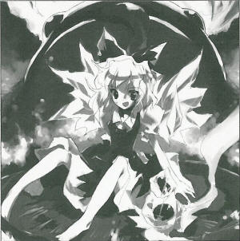

|
1st of the Month of Water (June), Season 120
Ice Fairy Eaten by Giant Toad Fairy whose prank went too far receives severe punishmentOn the Xth of month X, at around 12PM, a prank-loving fairy was eaten by a giant toad. She somehow escaped, and her injuries were nothing major. The victim is an ice fairy, Cirno (fairy). It was said that she was enjoying herself by freezing frogs at a swamp, and was then discovered and eaten by a giant toad that could be considered the size of two humans. Since you reap what you sow, the giant toad bears no sin. Geez, why the heck was there a giant toad in such a small swamp?! If it wasn't me but someone else, they wouldn't have been able to get away. The instant the victim was devoured, she chilled the insides of the toad which surprised it enough to spit her out. The giant toad was the master of that small swamp, and after hearing that a fairy was freezing the frogs at its swamp, it decided to punish it. The fairy had this to say about playing by freezing frogs: If the frogs are instantly completely frozen, they won't die, and when the ice melts they'll go back to normal. This isn't playing, this is ice training. I'm definitely not doing it because frozen frogs are cute, or because their cries are annoying, or because it's exciting when juggling them because they might break. Fairies generally enjoy pranks, and there are many cases in which they receive severe punishment for such pranks. The victim fairy in this event can be considered one such case. However, pranks are things done to people with more power than oneself, even for fairies. Even if she is always bullied, I think that directing that revenge towards weak frogs is a little pathetic; how might you see this?
(Aya Shameimaru)
AD:
Interested in working as a maid at the Scarlet Devil Mansion?
Uniforms and three meals a day included.
No afternoon naps, breaks, or paid vacations.
Hot-blooded people are welcome.
Enquire at: Scarlet Devil Mansion Chief Maid - Sakuya Izayoi
|
|
Cirno What the heck is this!? Aya Gensokyo's most definite source of information delivered quickly, Bunbunmaru Newspaper. Cirno No, not that, the content, I mean the content! This makes it seem like I'm at fault here! Aya The content was based on objective views. Cirno Kiiiiii! You've never been eaten by a giant toad, what do you know!? Aya The only things ever eaten by a giant toad would be... flies and you. Cirno Flies... Aya Yes, flies. An insect that doesn't think about the annoyance they cause, flapping their wings so busily as they buzz around. Cirno I fly a lot more calmly! Aya Oh, but I was talking about flies. Cirno A, anyway. Couldn't you have made a cooler article of me? Like, Ice Fairy Defeats Despicable Giant Toad! Aya When did you defeat it? I don't write lies, even if it makes money. Cirno I ain't gonna make you money! Aya Then all the more reason not to. Cirno But this article, it just makes me seem really lame... Aya In reality, to a witness you would look extremely lame. Cirno At least make the article cool! Aya If you succeed in being eaten in a cool way, then I'll write it so for you. Cirno Then change the normal frogs part to giant toads. Aya I refuse. If it bothers you so much why don't you go and defeat the giant toad? Cirno I did have a good match! When I ran away I completely chilled its stomach, enough to cause more than stomach problems! Aya I have a direct testimony from the giant toad who said that it only surprised him and that no actual harm was done. Cirno You don't even know what it feels like to have your eyeballs pushed in while you're being swallowed by a giant toad! Aya I don't think anyone would want to know that feeling. Cirno Freezing toads and bringing them back to life is high class art! Aya It isn't useful at all. Cirno Screech! Aya You're really just an underdog, or underfairy, that lost to a giant toad. Cirno What are you trying to do by spreading that all over Gensokyo!? If you stayed quiet about it nobody would known! Aya Now, now, they say rumors between humans and youkai only last 75 years. I don't think you'll be laughed at for too long time. [2] Cirno You're the one that caused it! Aya I just tell everyone the truth of daily happenings in Gensokyo. Cirno There should be more than enough fairies being punished in the first place! Why only me!? Aya That day was really peaceful, and nothing else really happened then. As I was worn out and flying about, I saw you sticking your head out of a giant toad's mouth. You should consider yourself lucky that there was an article on you at all. Cirno I'm actually lucky then? Yay~ Aya Yes, lucky. Profile: Cirno A mischievous fairy at the lake. Has the ability to manipulate cold. Appearances: Embodiment of Scarlet Devil, Perfect Cherry Blossom, Phantasmagoria of Flower View |
| [PREVIOUS ARTICLE : Wriggle] | [INDEX] | [NEXT ARTICLE : Tewi] |